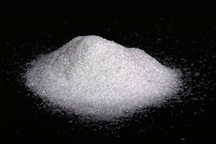

글루탐산 나트륨
|  | |
| 일반적인 성질 | |
|---|---|
| IUPAC 이름 | Sodium 2-aminopentanedioate |
| 화학식 | C₅H₈NNaO₄ |
| 분자식 | C5H8NNaO4 |
| CAS 번호 | 142-47-2 |
| PubChem | 85314 |
| ChemSpider | 76943 |
| 물리적 성질 | |
| 상태 | 백색 결정질 가루 |
| 분자량 | 169.111 g/mol |
| 녹는점 | 505.15 K 232 °C 449.6 °F |
| 물에 대한 용해도 | 74 g/100 ml |
| 열화학적 성질 | |
| 안전성 | |
| LD50(반수 치사량) | 16600 mg/kg (oral, rat) |
{kind=link}
글루탐산 나트륨(sodium glutamate) 또는 글루탐산 일나트륨(monosodium glutamate, MSG)은 가장 풍부한 자연발생 불필수 아미노산인 글루탐산의 나트륨염이다.[1] 미국 식약청은 MSG를 일반적으로 안전하다고 인식되는 물질(Generally Recognized as Safe; GRAS)로 판단하며, EU는 식품첨가물(food additive)로 다룬다. MSG는 HS 코드 29224220, E 번호E621이다[2]. MSG의 글루타메이트는 다양한 음식에서 같은 감칠맛을 낸다. 모두 화학적으로 동일하기 때문이다.[3] 식품제조업체들은 MSG를 향미증진제로 마케팅하고 사용한다. MSG가 다른 맛들에 대한 전체 지각을 균형있고 조화롭게 해주기 때문이다.[4][5] MSG의 상표로는 아지노모토(AJI-NO-MOTO®), 베친(Vetsin), 악센트(Ac'cent.) 등이 있다.
MSG 발명[편집]
1908년 이케다 키쿠나에(池田菊苗) 교수는 다시마에서 새로운 맛을 내는 물질인 글루타메이트를 수용성 추출과 결정화 과정을 통해 분리하였고 하였고 우마미라고 이름 지었다.[6] 그는 그 당시 과학적으로 설명할 수 없었지만 일본의 가다랑어와 다시마 육수에서 단맛, 신맛, 짠맛, 쓴맛과 다른 특유의 맛을 느꼈다.[7] 이온화된 글루타메이트가 감칠맛의 원인이라는 가정을 증명하기 위해 이케다 교수는 글루탐산 칼슘, 칼륨, 암모늄, 마그네슘 등 많은 글루타메이트의 특성을 연구하였다. 모든 염은 기타 무기질 덕분에 특정한 금속성 맛에 더하여 감칠맛을 끌어낼 수 있었다. 그 중에서도 글루탐산나트륨이 가장 용해가 잘되며 맛이 좋고 결정이 쉽게 만들어졌다. 이케다 교수는 이것을 글루탐산 모노나트륨이라 이름짓고 MSG 생산 특허를 출원하였다.[7][8] 스즈키 형제들은 1909년 MSG를 일본어로 맛의 본질을 의미하는 ‘아지노모토(AJI-NO-MOTO®)’라는 이름으로 세계 최초로 상업적으로 생산하기 시작하여,[9][10][11] 대상주식회사 창업자인 임대홍 회장이 1955년 일본 유학 시절, 1년간 감칠맛을 내는 성분 '글루탐산' 제조공법을 배워, 한국으로 돌아와, '미원'을 출시하여, 1960년대 중반, 국내 최초로 발효법에 의한 글루타민산 생산기술을 개발했다.
생산 및 화학적 특성[편집]
MSG가 시장에 처음 등장한 이후 세 가지 생산방법이 이용되었다. (1) 펩티드 결합을 파괴하는 염산에 의한 야채 단백질의 가수분해 (1909 -1962), (2) 아크릴로나이트릴(acrylonitrile)에 의한 직접 화학합성 (1962 – 1973), (3) 현재의 사용방법인 박테리아 발효다.[11] 처음에 밀의 글루텐이 가수분해에 사용되었다. 이는 글루텐이 단백질 100 g 속에 30g이 넘는 글루타메이트와 글루타민이 들어있었기 때문이다. 계속 증가하는MSG 수요를 충족시키기 위해 새로운 생산공정이 연구되었다. 폴리아크릴(polyacrylic) 섬유산업이 1950년대 중반 일본에서 시작되어 아크릴로나이트릴이 MSG 합성의 초기 물질로 채택되었다.[12] 현재 세계 MSG 생산의 대부분은 와인, 식초, 요거트, 초콜렛과 비슷하게 박테리아(coryneform bacteria) 발효에 의해 이루어지고 있다. 중성화 단계 후에 나트륨이 첨가된다. 발효 동안 사탕무, 사탕수수, 타피오카, 당밀 등의 탄수화물과 암모니아에서 배양된 박테리아가 L-글루타메이트(L-glutamate)가 분리된 배양액으로 아미노산을 분비한다. Kyowa Hakko Kogyo Co Ltd는 L-글루타메이트를 생산하는 산업용 발효법을 최초로 개발하였다.[13] 현재 MSG 산업 생산 분야에서 설탕에서 글루타메이트로 바뀌는 양과 생산율이 향상되어 수요를 맞추고 있다.[11] 여과, 농축, 산처리, 결정화 과정 후에 만들어지는 최종 물질은 순수한 글루타메이트, 나트륨, 물 등이다. 용액 속에서 글루타메이트와 나트륨으로 분리된 백색 무취 결정질 가루가 나온다. 이 가루는 물에 잘 녹지만 습기를 빨아들이지 않으며 에테르 같은 일부의 일반적인 유기 용액에는 녹지 않기도 한다.[14] 전반적으로 MSG는 정상적인 식품 공정에서 안정적이다. MSG는 요리 중에도 분해되지 않지만, 다른 아미노산처럼 매우 높은 온도의 설탕 속에서 갈변 또는 마이야르 반응(Maillard reactions)을 보인다.[9]
MSG 활용[편집]
맛있는 냄새와 합쳐지지 않은 순수한 MSG는 사실 맛이 좋지 않다.[15] MSG는 조미료로서 다른 맛을 내는 화합물들이 특정 음식의 전체적인 맛에 균형과 조화를 이루도록 만들어준다. MSG는 고기, 생선, 닭, 야채, 소스, 수프, 양념 등과 잘 섞이며, 소고기 콘소메 같은 특정 식품의 선호도를 높여준다.[4] 설탕을 제외한 다른 기본 재료처럼 MSG는 함량이 적당할 때 맛이 좋다. MSG 를 너무 많이 넣으면 음식 맛을 망치게 된다. 이 함량은 음식에 따라 다양하다. 맑은 국물의 경우 100 ml 당 MSG 1 g보다 많으면 맛이 급격히 떨어진다.[16] MSG와 나트륨(염화나트륨) 과 뉴클레오티드 같은 우마미 물질 사이에는 상호작용이 일어난다. 가장 좋은 맛을 내기 위해서는 모든 성분이 최적의 함량을 가져야 한다. 이러한 특성 때문에 MSG는 고혈압, 심장병, 심장마비를 일으키는 소금(나트륨 sodium)의 섭취량을 낮추는데 이용된다. MSG는 소금을 30%까지 줄인 저염 식품의 맛을 증진시켜줄 수 있다. MSG의 나트륨 햠량(질량 백분율)은 염화나트륨(39%)보다 약 3배 낮다(12%).[17] 다른 나트륨염들도 저염 수프에 사용되지만 MSG보다 맛이 좋지 않다.[18]
향미증진제로서 MSG의 안전성[편집]
MSG는 백여 년 이상 음식 양념을 위해 안전하게 사용되었다. 그동안 MSG의 역할, 혜택, 안전성에 대한 광범위한 연구가 이루어졌다. 식품 첨가물 안전과 관련된 국내외 기구들은 향미증진제로서 MSG의 인간 소비가 안전하다고 판단한다.[19] ‘MSG 증후군’은 로버트 호만 곽이 미국의 중국 식당에서 식사를 한 후 느낀 증상을 보고하면서 ‘중국식당 증후군’으로 불리기도 했다. 곽은 증상의 다양한 이유를 제안하였다. 예를 들면 와인을 넣고 요리한 음식의 알코올 성분, 소금 함량, MSG 양념 등이었다. 하지만 MSG에만 초점이 맞춰지면서 그 후 이러한 증상들이 MSG와 연관지어졌다. 와인 또는 소금 함량의 효과에 대해서는 전혀 연구되지 않았다.[20] 그 후 명확하지 않은 증상들에 대한 일화가 쌓여갔다. 정상적인 상황에서 우리는 급성독성이 아주 적은 글루타메이트를 대사시킬 수 있다. 반수치사량(LD50)은 일반 쥐와 생쥐의 경우 각각 몸무게kg당 15-18 g사이다. 이는 나트륨의 LD50 보다 5배나 높다(일반 쥐의 경우3 g/kg ). 그러므로 식품 첨가물로서 MSG와 식품 내의 글루탐산의 원함량은 위험한 수준의 독성을 가지지 않는다.[19] 미국실험생물학학회연합(Federation of American Societies for Experimental Biology)은 1995년 미국식약청(United States Food and Drug Administration)을 위한 보고서를 발표했는데 음식에 들어있지 않는 MSG 3 g 에 노출될 경우 MSG 신드롬에 반응하는 외형적으로 건강한 개인 그룹이 존재하는 것처럼 보이긴 하지만, MSG를 ‘통상적인 수준으로 섭취할 경우’ 안전하다고 결론짓고 있다. MSG 신드롬이 증언 보고서에 기초하고 있기 때문에 MSG의 인과관계는 아직 밝혀지지 않았다.[21] 이 보고서는 글루타메이트가 만성질병이나 심신쇠약에 영향을 준다는 자료가 존재하지 않는다고 설명하였다. 통제된 이중맹검 다기관 임상실험에서도 MSG 신드롬과 MSG에 부작용이 있다고 믿는 개인의 MSG 섭취 사이의 상관관계를 보여주지 못했다. 통계적 연관성을 찾을 수 없었으며, 반응이 충분하지 않고 일관적이지 못했다. MSG가 음식과 함께 섭취될 때도 증상이 관찰되지 않았다.[22][23][24][25]
실험의 적절한 통제에는 이중맹검 위약 통제 실험 고안(DBPC: double-blind placebo-controlled experimental design)과 글루타메이트의 강하고 독특한, 입안에 남는 맛 때문에 캡슐을 사용하는 것이 포함된다.[23] Tarasoff 와 Kelly (1993)의 실험에서는 71명의 금식 참가자들에게 MSG 5 g을 섭취시킨 후 표준 아침식사를 제공하였다. 유일한 반응은 스스로 MSG에 민감하다고 생각하는 개인들에게 나타난 위약효과였다. .[20] Geha 등(2000)은 다른 연구에서 MSG 민감성을 보고한 개체130명의 반응을 실험하였다. 적어도 두 가지 증상을 가진 개체에 수차례의 DBPC 실험을 실시하였다. 그러나 단 2명만이 네 가지 도전과제에 모두 반응하였다. 연구자들은 보편성이 낮기 때문에 MSG 반응을 재현할 수 없다고 결론지었다.[26]
MSG가 비만을 유발하는지 살펴보는 추가 연구에서는 상충되는 결과들이 나오고 있다.[27][28] MSG와 천식과의 연관성을 조사한 몇몇 연구들이 있었지만 입증이 되지 않았다.[29]
글루타메이트가 학습과 기억에 핵심 역할을 하는 인간 뇌의 중요한 신경전달물질이기 때문에 신경학자들은 식품내 MSG의 부작용 가능성에 대해 연구를 계속하고 있지만 인과관계를 밝혀낸 결정적인 연구는 아직까지 없다.[30]
일본
녹내장위험 임산부주의를 당부한다
호주와 뉴질랜드[편집]
호주 뉴질랜드 식품 표준[31] (Food Standards Australia New Zealand, FSANZ)은 MSG가 ‘심각한 거부반응(serious adverse reactions)’ 이나 혹은 ‘장기적으로 지속되는 효과들(long-lasting effects)’과 분명히 연관되지 않았음을 보여주는 ‘다수의 과학적 연구들로부터 도출된 확실한 증거(safe for the general population)’를 언급하며 MSG가 일반적인 사람들에게 안전하다고 공표하였다.
하지만 동시에 전 인구의 1% 미만의 매우 민감한 사람들은 한번에 다량의 MSG를 섭취할 경우 ‘두통, 얼얼함, 따끔따끔함, 홍조, 근육 긴장, 일반적인 쇠약’과 같은 ‘일시적인’ 부작용을 나타낼 수 있다고 설명하였다. MSG에 스스로 민감하다고 생각하는 사람들은 병원에서 검사를 통해 확인해볼 것을 권장한다.
호주 뉴질랜드 식품 표준 1.2.4항에서는 MSG를 식품 첨가물로서 식품 포장 라벨에 첨가여부를 표시할 것을 요구한다. 라벨에는 식품 첨가물 분류명(예, 향미증진제)을 쓰고 뒤에 식품 첨가물의 이름이나, MSG, 혹은 그것의 국제 번호 제도 (International Numbering System, INS) 번호인 621을 명기하여야 한다[32].
미국[편집]
글루탐산 나트륨(MSG)은 음식에서 발견되는 몇 가지 형태의 글루타메이트 중 하나인데, 대부분 글루타메이트는 아미노산 형태로 자연에 녹아있다. 글루타메이트와 글루타메이트염은 가수분해된 야채 단백질, 자기 분해된 효모, 가수분해된 효모, 효모 추출물, 콩 추출물, 단백질 분리물과 같은 매우 다양한 다른 첨가물들에서도 발견되며. 일반적이고 통상적인 이름들로 표기되어야 한다. 1998년부터 MSG는 ‘조미료와 향신료’라는 분류에 포함될 수 없다. 리보뉴클레오티드(ribonucleotides)인 이노신산이나트륨(disodium inosinate)와 구아닌산나트륨(disodium guanylate)는 MSG가 포함된 재료에 시너지 효과를 주기 위해 일반적으로 사용되는 식품 첨가물들이다. 그러나 ‘천연향미료(natural flavor)’라는 명칭은 식품 산업에서 (MSG에서 나트륨염이 빠진) 글루타메이트에만 사용한다. FDA 규제의 부재로 인해 어느 정도 비율의 글루타메이트가 ‘천연향미료’인지 결정하는 것은 불가능하다.
FDA는 식품이 가수분해 단백질 같은 유리 글루타메이트 소스인 성분을 가지고 있다면 ‘No MSG’ 또는 ‘MSG 무첨가’ 라벨이 오해의 소지가 있다고 여기고 있다. 1993년 FDA는 글루타메이트를 상당량 포함한 특정 가수분해 단백질의 일반적인 이름에 ‘글루타메이트 함유’라는 문구를 추가하는 방안을 제안하였다. 식품 애호가 하롤드 맥기(Harold McGee)의 저서 식품과 조리법에 대하여(On Food and Cooking) 2004년판에서는 ‘ [많은 연구 후에], 독물학자들은 MSG가, 심지어 양이 많은 경우에도, 대부분의 인간들에게 무해한 성분이라고 결론짓고 있다’라고 쓰여 있다.[33]
각주[편집]
- 이동 ↑ Ninomiya K (1998). “Natural ocurrence”. 《Food Reviews International》 14 (2&3): 177–211. doi:10.1080/87559129809541157.
- 이동 ↑ http://www.food.gov.uk/safereating/chemsafe/additivesbranch/enumberlist
- 이동 ↑ Ikeda K (2002년 11월). “New seasonings”. 《Chem Senses》 27 (9): 847–849. PMID 10736352. doi:10.1093/chemse/27.9.847.
- ↑ 이동: 가 나 Loliger J (2000년 4월). “Function and importance of Glutamate for Savory Foods”. 《Journal of Nutrition》 130 (4s Suppl): 915s–920s. PMID 12438213.
- 이동 ↑ Yamaguchi S (1991년 5월). “Basic properties of umami and effects on humans”. 《Physiology & Behavior》 49 (5): 833–841. PMID 1679557. doi:10.1016/0031-9384(91)90192-Q.
- 이동 ↑ Lindemann B, Ogiwara Y, Ninomiya Y (2002년 11월). “The discovery of umami”. 《Chem Senses》 27 (9): 843–844. PMID 12438211. doi:10.1093/chemse/27.9.843.
- ↑ 이동: 가 나 Ikeda K (2002년 11월). “New seasonings”. 《Chem Senses》 27 (9): 847–849. PMID 12438213. doi:10.1093/chemse/27.9.847.
- 이동 ↑ Ikeda K (1908). “A production method of seasoning mainly consists of salt of L-glutamic acid”. Japanese Patent 14804
- ↑ 이동: 가 나 Yamaguchi S, Ninomiya K (1998). “What is umami?”. 《Food Reviews International》 14 (2 & 3): 123–138. doi:10.1080/87559129809541155.
- 이동 ↑ Kurihara K (2009년 9월). “Glutamate: from discovery as a food flavor to role as a basic taste (umami)?”. 《The American Journal of Clinical Nutrition》 90 (3): 719S–722S. PMID 19640953. doi:10.3945/ajcn.2009.27462D.
- ↑ 이동: 가 나 다 Chiaki Sano (2009년 9월). “History of glutamate production”. 《The American Journal of Clinical Nutrition》 90 (3): 728S–732S. PMID 19640955. doi:10.3945/ajcn.2009.27462F.
- 이동 ↑ Yoshida T (1970). “Industrial manufacture of optically active glutamic acid through total synthesis”. 《Chem Ing Tech》 42: 641–644.
- 이동 ↑ Kinoshita S, Udaka S, Shimamoto M (1957). “Studies on amino acid fermentation. Part I. Production of L-glutamic acid by various microorganisms”. 《J Gen Appl Microbiol》 3: 193–205.
- 이동 ↑ Win. C., ed (1995). 《Principles of Biochemistry》.
|제목=이(가) 없거나 비었음 (도움말) Boston, MA: Brown Pub Co.. - 이동 ↑ Rolls ET (2009년 9월). “Funtional neuroimaging of umami taste: what makes umami pleasant?”. 《The American Journal of Clinical Nutrition》 90 (3): 804S–813S. PMID 19571217. doi:10.3945/ajcn.2009.27462R.
- 이동 ↑ Kawamura Y, Kare MR, ed (1987). 《Umami: a basic taste》.
|제목=이(가) 없거나 비었음 (도움말) New York, NY: Marcel Dekker Inc.. - 이동 ↑ Yamaguchi S, Takahashi C (1984년 1월). “Interactions of monosodium glutamate and sodium chloride on saltiness and palatability of a clear soup”. 《Journal of Food Science》 49 (1): 82–85. doi:10.1111/j.1365-2621.1984.tb13675.x.
- 이동 ↑ Ball P, Woodward D, Beard T, Shoobridge A, Ferrier M (2002년 Jun월). “Calcium diglutamate improves taste characteristics of lower-salt soup”. 《Eur J Clin Nutr》 56 (6): 519–523. PMID 12032651. doi:10.1038/sj.ejcn.1601343.
- ↑ 이동: 가 나 Walker R, Lupien JR (2000년 4월). “The safety evaluation of monosodium glutamate”. 《Journal of Nutrition》 130 (4S Suppl): 1049S–1052S. PMID 10736380.
- ↑ 이동: 가 나 Freeman, M (2006). “Reconsidering the effects of monosodium glutamate: A literature review”. 《Journal of the American Academy of Nurse Practicioners》 18 (10): 482–486. PMID 16999713. doi:10.1111/j.1745-7599.2006.00160.x.
- 이동 ↑ Raiten DJ, Talbot JM, Fisher KD (1996). “Executive Summary from the Report: Analysis of Adverse Reactions to Monosodium Glutamate (MSG)”. 《Journal of Nutrition》 126 (6): 1743–1745. PMID 7472671.
- 이동 ↑ Geha RS, Beiser A, Ren C et al (2000년 4월). “"Review of alleged reaction to monosodium glutamate and outcome of a multicenter double-blind placebo-controlled study”. 《J. Nutr》 130 (4S Suppl): 1058S–62S. PMID 10736382. [깨진 링크(과거 내용 찾기)] http://jn.nutrition.org/cgi/pmidlookup?view=long&pmid=10736382[깨진 링크(과거 내용 찾기)]
- ↑ 이동: 가 나 Tarasoff L., Kelly M.F (1993). “Monosodium L-glutamate: a double-blind study and review”. 《Food Chem. Toxicol》 31 (12): 1019–1035. PMID 8282275. doi:10.1016/0278-6915(93)90012-N.
- 이동 ↑ Freeman M (2006년 10월). “Reconsidering the effects of monosodium glutamate: a literature review”. 《J Am Acad Nurse Pract》 18 (10): 482–6. PMID 16999713. doi:10.1111/j.1745-7599.2006.00160.x.
- 이동 ↑ Walker R (1999년 10월). “The significance of excursions above the ADI. Case study: monosodium glutamate”. 《Regul. Toxicol. Pharmacol》 30 (2 Pt 2): S119–S121. PMID 10597625. doi:10.1006/rtph.1999.1337.
- 이동 ↑ Willams, A. N., and Woessner, K.M (2009). “Monosodium glutamate 'allergy': menace or myth?”. 《Clinical & Experimental Allergy》 39 (5): 640–64. doi:10.1111/j.1365-2222.2009.03221.x.
- 이동 ↑ Shi, Z; Luscombe-Marsh, ND; Wittert, GA; Yuan, B; Dai, Y; Pan, X; Taylor, AW (2010). “Monosodium glutamate is not associated with obesity or a greater prevalence of weight gain over 5 years: Findings from the Jiangsu Nutrition Study of Chinese adults”. 《The British journal of nutrition》 104 (3): 457–63. PMID 20370941. doi:10.1017/S0007114510000760.
- 이동 ↑ Nicholas bakalar (Ogos 25, 2008). “"Nutrition: MSG Use Is Linked to Obesity”. 《The New York Times》. http://www.nytimes.com/2008/08/26/health/nutrition/26nutr.html. Retrieved 2010-11-10. " Consumption of monosodium glutamate, or MSG, the widely used food additive, may increase the likelihood of being overweight, a new study says."
- 이동 ↑ Stevenson, D. D (2000). “Monosodium glutamate and asthma”. 《J. Nutr》 130 (4S Suppl): 1067S–1073S. PMID 10736384.
- 이동 ↑ Nicholas J. Maragakis, MD; Jeffrey D. Rothstein, MD, PhD (2001;58:365-370). “"Glutamate Transporters in Neurologic Disease”. 《Neurology》. 2012년 03월 23일에 원본 문서에서 보존된 문서. 2010년 11월 10일에 확인함. http://archneur.ama-assn.org/cgi/content/extract/58/3/365?maxtoshow=&hits=10&RESULTFORMAT=&fulltext=monosodium+glutamate&searchid=1&FIRSTINDEX=0&resourcetype=HWCIT Archived 2012년 3월 23일 - 웨이백 머신. Retrieved 2010-11-10. " Glutamate is the primary excitatory amino acid neurotransmitter in the human brain. It is important in synaptic plasticity, learning, and development. Its activity at the synaptic cleft is carefully balanced by receptor inactivation and glutamate reuptake. When this balance is upset, excess glutamate can itself become neurotoxic. ... This overactivation leads to an enzymatic cascade of events ultimately resulting in cell death.”
- 이동 ↑ “MSG In Food”. 《Food Standards Code》. 2010년 03월 28일에 원본 문서에서 보존된 문서. 2010년 05월 17일에 확인함. Food Standards Australia New Zealand. http://www.foodstandards.gov.au/scienceandeducation/factsheets/factsheets2008/msginfood.cfm Archived 2010년 3월 28일 - 웨이백 머신. Retrieved 17 May, 2010.
- 이동 ↑ “Standard 1.2.4 Pelabelan Bahan-bahan”. 《Food Standards Code》. 2010년 08월 21일에 원본 문서에서 보존된 문서. 2010년 05월 15일에 확인함. Food Standards Australia New Zealand. http://www.foodstandards.gov.au/foodstandards/foodstandardscode/standard124labelling4231.cfm Archived 2010년 8월 21일 - 웨이백 머신. Retrieved 15 May, 2010.
- 이동 ↑ curiouscook.com McGee, Harold, On Food and Cooking, the Science and Lore of the Kitchen, 2004
외부 링크[편집]
| 위키미디어 공용에 관련된 미디어 분류가 있습니다. |
- (영어) Monosodium glutamate: Is it harmful? (Mayo Clinic)
- (영어) The Facts on Monosodium Glutamate (EUFIC)
- 식품의약품안전처